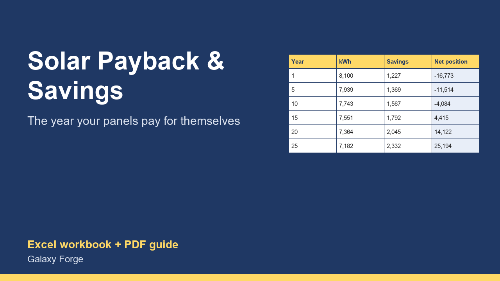

Net system cost, year-by-year production with panel ageing, rising electricity prices, maintenance, and the year your panels pay for themselves.
A solar quote usually shows one payback number. It rarely shows the assumptions behind it: how much the system produces, what the power is worth, how fast prices rise, how much output panels lose each year, and what upkeep costs.
This calculator makes each assumption an input and runs 25 years: production falling with panel ageing, the value of that output at an electricity price that rises each year, maintenance, cumulative savings, and your net position against the net cost of the system. It reports the payback year, the 25-year savings and the return on the net cost.
Incentives are an input you fill in only with amounts you will actually receive. The US federal residential clean energy credit ended for expenditures after 31 December 2025, so the example uses no federal credit.
1) On Settings, enter the system size and the yearly production per kW from your quote or a free tool such as NREL PVWatts, the installed cost and any incentives you are sure to receive. 2) Enter your electricity price per kWh from your bill, the yearly price increase you expect, the share of solar output worth the full retail price, the yearly panel output loss and the yearly upkeep. 3) Read Summary for the payback year and 25-year results, and 25 Years for each year.
Price: $12, one-time. Download: solar_panel_payback_savings_calculator.xlsx (Settings, 25 Years, Summary) and this guide. Works in Excel 2016 or later, Excel for Mac and Excel on the web; opens in Google Sheets and LibreOffice.
New product, listed 2026-10-29: no sales or reviews yet. Example figures in the workbook are illustrative.
This workbook is an estimating tool, not financial or tax advice. Production, prices and incentives vary by location, roof and contract; check every input with your installer, your utility and a tax professional before you sign.